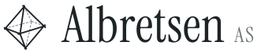
Design 49 · Habit · asset kit
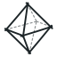
albretsen.no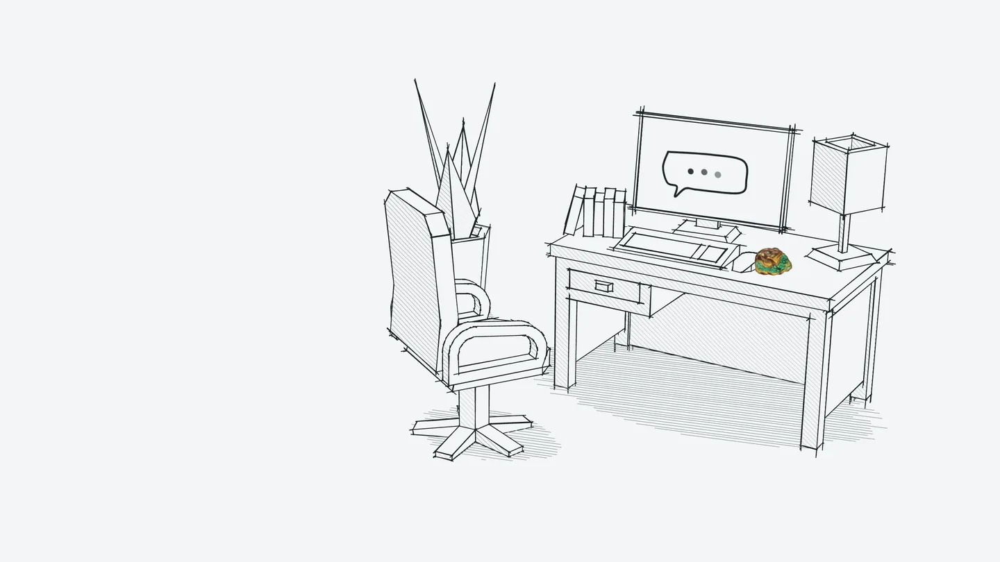
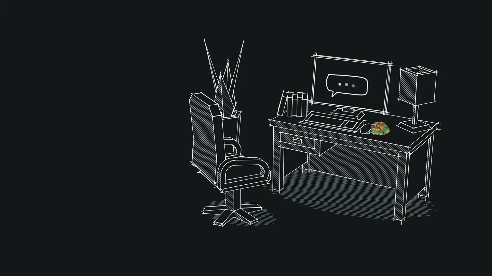
01 · Identity
Front edges in ink, back edges dashed — the convention Sowerby used for crystal habits in 1802. Its top half is an A. The wordmark is Instrument Serif, set tight and converted to outlines.
identity/lockup.svg · mark + wordmark + AS · chalk variant for dark
identity/mark.svg · 128 / 48 / 24 px · also mark-current.svg (uses currentColor)
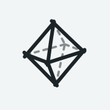
favicon.svg (follows OS theme) · apple-touch-icon-180.png
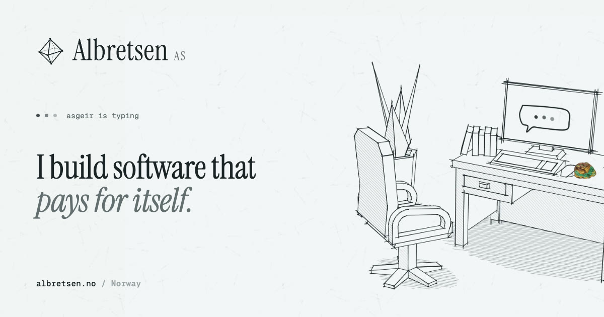
identity/og-image.jpg · 1200 × 630
identity/wordmark.svg · outlines, no font needed
02 · Palette
The interface owns no colour. Every hue on the page arrives inside an image — a 1806 specimen, a product's real logo. That restraint is what makes the colour land.
paperoklch(.968 .003 216)
#f2f5f6
sheetoklch(.992 .0015 216)
#fbfdfd
ruleoklch(.885 .006 216)
#d5dadc
penciloklch(.70 .010 216)
#98a0a2
graphiteoklch(.53 .012 216)
#646e70
inkoklch(.255 .012 216)
#1c2427
ink-deepoklch(.18 .010 216)
#0d1314
slate (dark paper)
oklch(.205 .008 216)
#131819
slate-raised
oklch(.245 .009 216)
#1c2223
slate-rule
oklch(.34 .010 216)
#32393b
chalk-dim
oklch(.56 .010 216)
#6e7678
chalk-muted
oklch(.72 .009 216)
#9fa6a8
chalk (dark ink)
oklch(.935 .005 216)
#e6eaec
imagery onlyspecimens + real product logos
03 · Type
Instrument Serif · the site speaking · 400 + italic
Quiet habit.
I build software that pays for itself. On Google Play since 2016.
Geist · interface, body · 400 / 500 / 600
Albretsen AS
A small technology company in Norway that builds whatever is profitable: apps, SaaS and the plumbing AI agents need.
Geist Mono · the visitor's replies, facts, labels
claude mcp add albretsen https://albretsen.no/mcp
113,000+ installs · 17 tools · 549 commits
since 2016 → 2026
04 · Hero imagery
CC0 Kenney models and generated crystal habits, rendered in three.js as ink: overshooting draftsman lines, screen-space hatching, dashed hidden edges. Each still ships light and dark, at 1× and 2× (WebP) plus 2× AVIF.
hero/desk-{light,dark} · the operator's desk; the screen is already talking
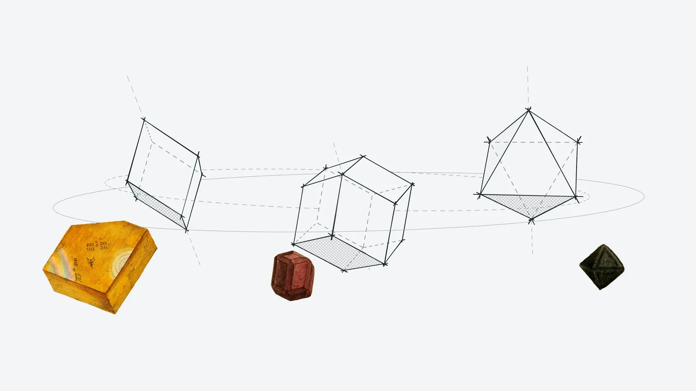
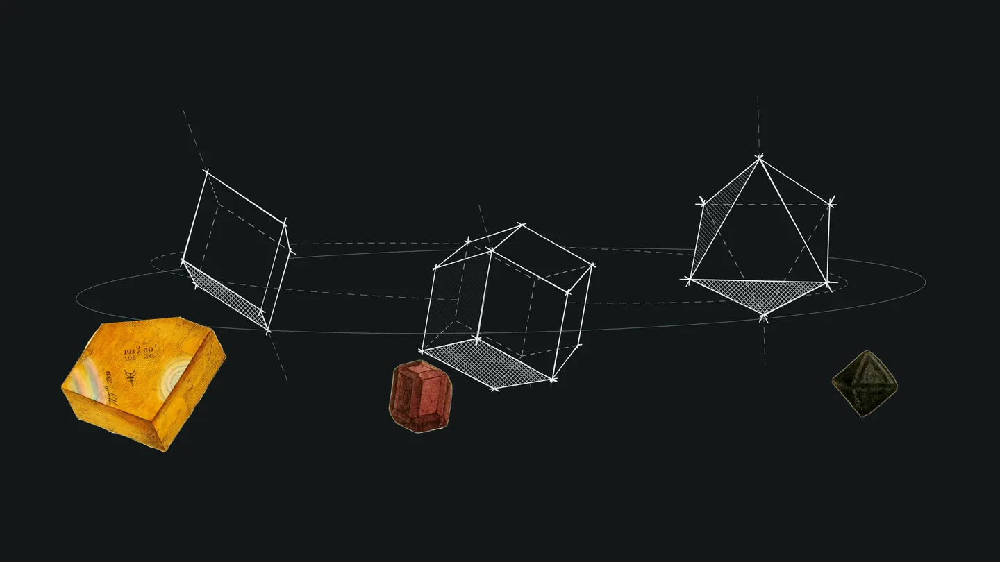
hero/plate-{light,dark} · Plate I: three habits in orbit beside the 1806 specimens they describe
05 · Products
Each product's actual mark, untouched, shown on an ink object: the only coloured pixel in each plate besides its specimen.
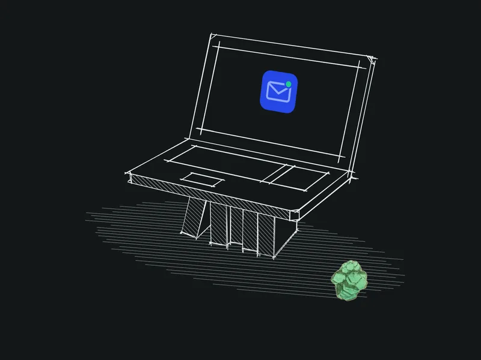
MCP Emails · laptop
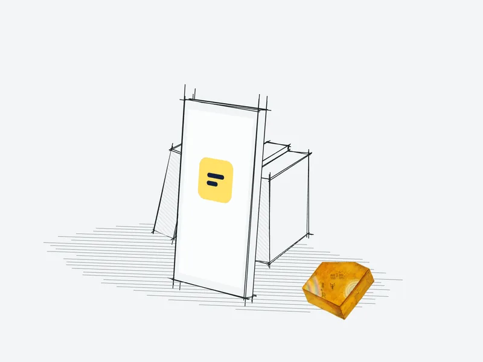
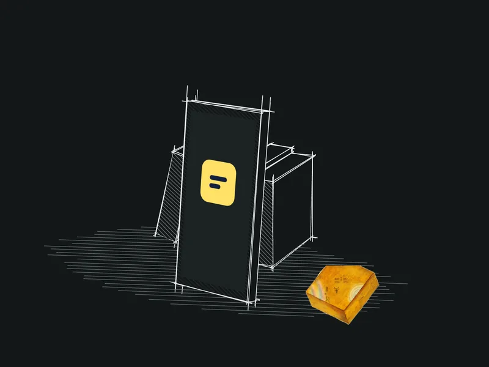
Fun Libs · phone against books
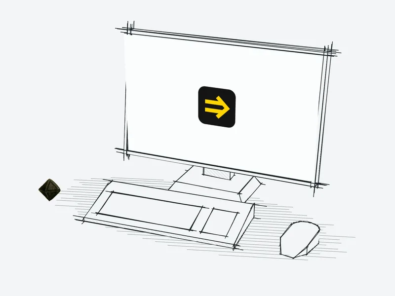
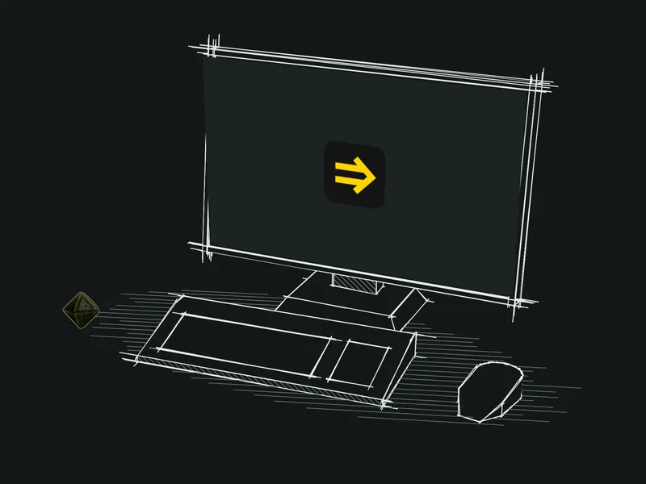
Toolrails · workstation
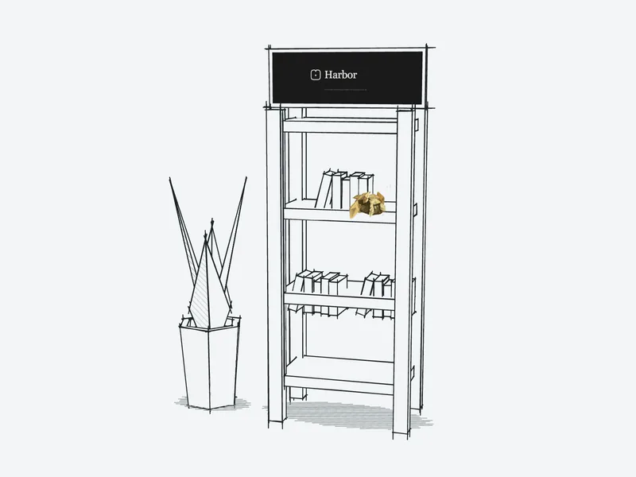
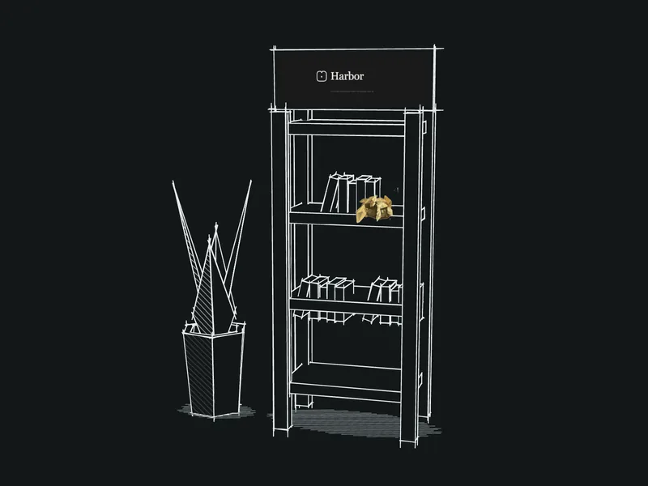
Harbor · knowledge on shelves
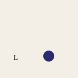
Luma · real mark
Polyglot Pilot
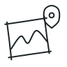
PinPoint
WebVakt
Joke Central
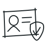
Tryggere Hyring
Early apps
06 · Specimens
Cut out of James Sowerby's British Mineralogy (Biodiversity Heritage Library scan, public domain). Use them as paperweights, margin objects and section markers — always small, always with a slow drift.
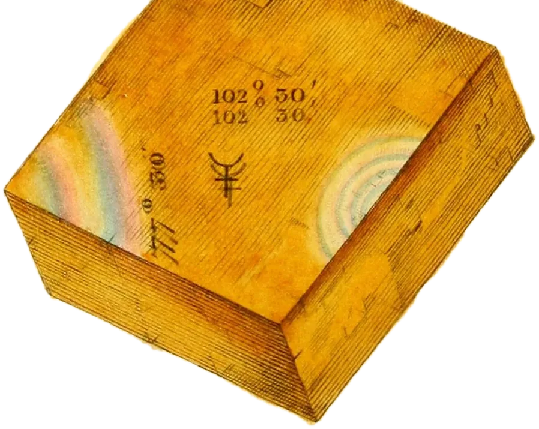
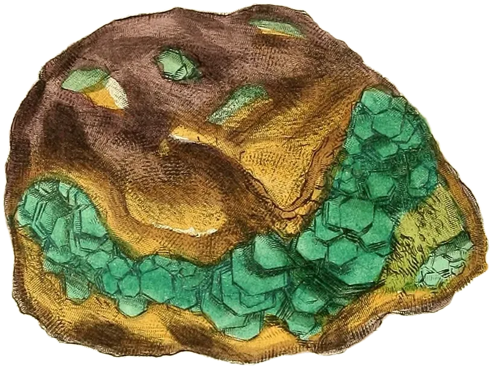
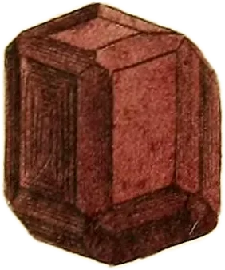
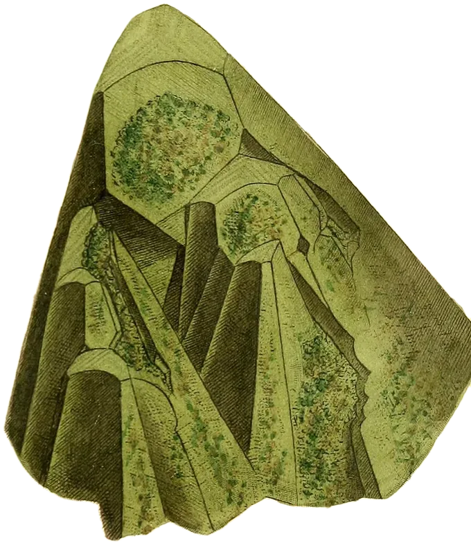
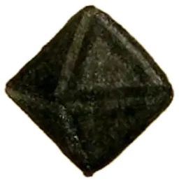
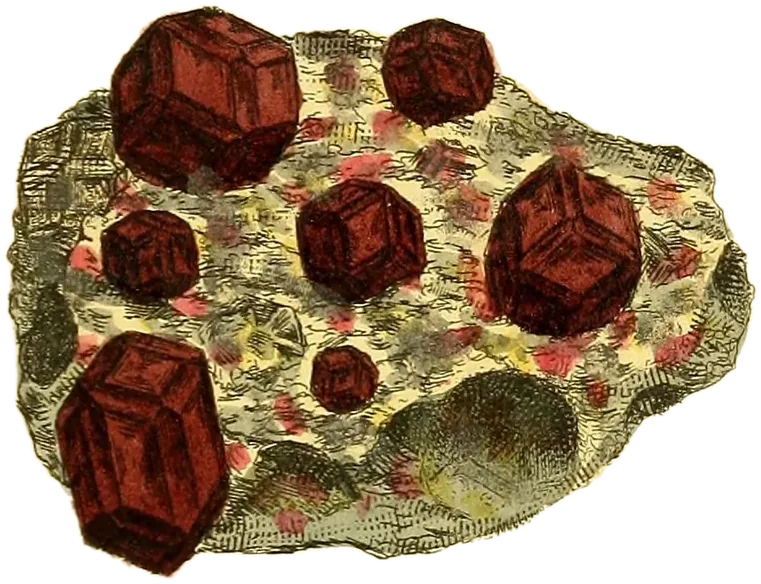
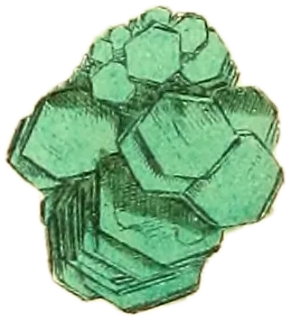
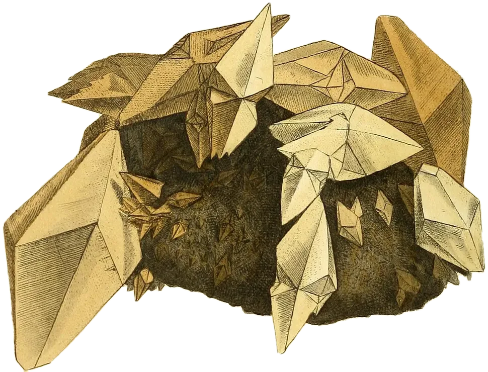
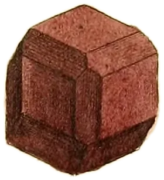
07 · Extras
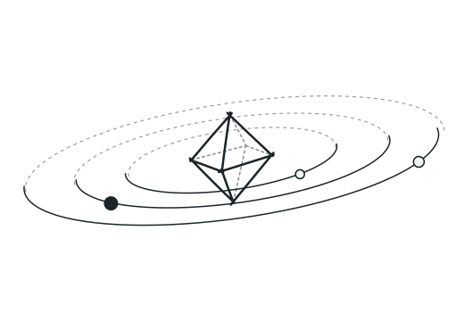
extras/orbit-diagram.svg · three products in orbit around the habit; back halves dashed
extras/annotations/*.svg · arrow, underline, circle, bracket, spark, tick, strike, dimension
extras/theme-lamp.svg · the switch; groups #lamp #cord #rays
pattern-crosses.svg · 48px tile
pattern-hatch.svg · 24px tile
paper-grain.webp · 512px tooth, transparent
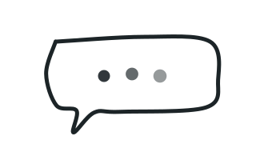
hero/_screen-bubble-*.svg · baked onto the monitor
08 · Interactive
three/crystal.js — six habits drawn live in ink. Drag to turn (with inertia), tap or press Enter to redraw as the next habit, stroke by stroke. A small octahedron keeps orbit. Theme-aware, pauses offscreen, respects reduced motion. Standalone demo: three/demo.html.
09 · Motion
SVGs draw themselves when they enter the viewport (pathLength + dashoffset, staggered). Images “develop” with a wipe.
Three pencil dots, a beat that scales with the sentence, then the bubble unfolds from its tail — origin-aware, like Radix popovers.
A hand-drawn underline is drawn under links on hover and rubbed out on leave. Mask-based, so it takes the text colour.
Pull the lamp's cord. A View Transition reveals the other theme through a hand-drawn circle growing from the bulb; the drawings swap ink for chalk.
Same-document View Transition: the old view lifts away like a turned sheet, the new one settles; named elements morph.
Specimens breathe on a 14–17 s loop, a few pixels at most. Never more than three on screen at once.